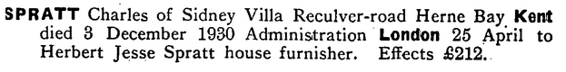
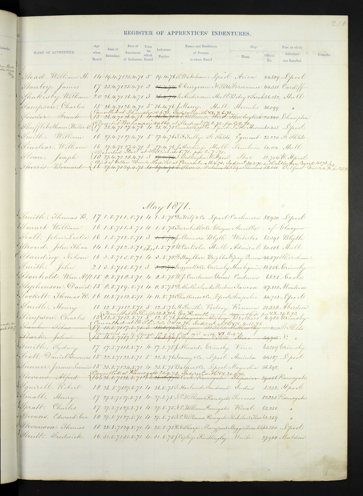
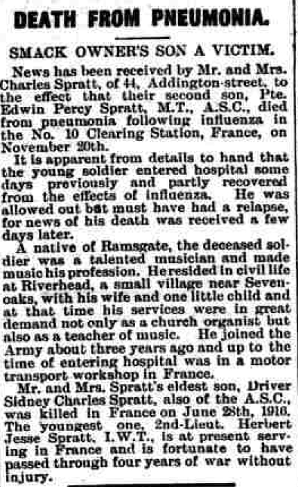
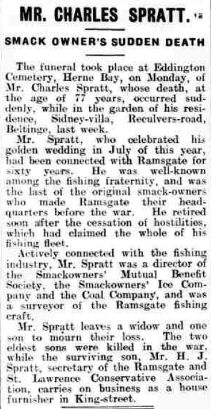
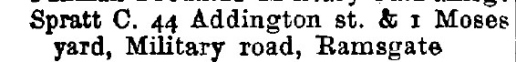
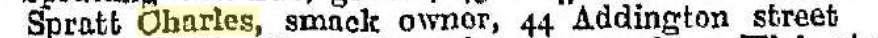

Charles Spratt cMay 1854 - 1930
[ Home ] | [ Calendar ] | [ Surnames Index ] | [ Family History ]A smack owner and fish salesman and uk merchant navy apprentice and the child of James Spratt (an agricultural laborer) and Sarah Spain, Charles Spratt, the great-great-uncle of <a href="I1.html">Nigel Horne</a>, was born in St Nicholas-at-Wade, Kent, England <i>c.</i> May 1854<span class="citation">1,2,3,4</span>, was baptized there on Jul 16, 1854 and married Susannah Thunder (with whom he had 3 children: <a href="I1488.html">Sidney Charles James</a>, <a href="I1486.html">Edwin Percy</a> and <a href="I1487.html">Herbert Jesse</a>) at St Martin, Herne, Kent, England on Jul 3, 1880<span class="citation">7</span>.</p><p>Charles spent all of his life in Kent, England. Throughout his life, he lived in several places around the county: at The Row in St Nicholas-at-Wade on Apr 7, 1861<span class="citation">9</span>; at Way, Minster, Thanet on Apr 2, 1871<span class="citation">10</span>; in Ramsgate on Apr 3, 1881<span class="citation">11</span>; at 44 Addington Street, Ramsgate in 1899<span class="citation">8</span>, on Mar 31, 1901<span class="citation">12</span>, on Apr 2, 1911<span class="citation">13</span>, in 1913 and in 1918; and on Sidney Villa, Reculver Road, Herne Bay in 1930 which is where he died on Dec 3<span class="citation">5,6</span>. He was buried at Eddington Cemetery, Herne Bay on Dec 8, 1930.
Parents
- James was born on May 12, 1816
- Sarah was born c. 1814
Children
- Sidney Charles James was born c. Aug 1882
- Edwin Percy was born c. May 1891
- Herbert Jesse was born on Aug 16, 1894
Citations
- 1861 England Census Online publication - Provo, UT, USA: The Generations Network, Inc., 2005.Original data - Census Returns of England and Wales, 1861. Kew, Surrey, England: The National Archives of the UK (TNA): Public Record Office (PRO), 1861. Data imaged from the National
- 1871 England Census Online publication - Provo, UT, USA: The Generations Network, Inc., 2004.Original data - Census Returns of England and Wales, 1871. Kew, Surrey, England: The National Archives of the UK (TNA): Public Record Office (PRO), 1871. Data imaged from the National
- England & Wales births 1837-2006 - Findmypast
- England & Wales, FreeBMD Birth Index, 1837-1915 Online publication - Provo, UT, USA: The Generations Network, Inc., 2006.Original data - General Register Office. England and Wales Civil Registration Indexes. London, England: General Register Office. © Crown copyright. Published by permission of the Cont
- England & Wales Government Probate Death Index 1858-2019 - Findmypast
- England & Wales deaths 1837-2007 - Findmypast
- Kent, Canterbury Archdeaconry marriages 1538-1928 - Findmypast
- 1899 Kelly's Directory
- 1861 England, Wales & Scotland Census - Findmypast (was age 7 and the son of the head of the household)
- 1871 England, Wales & Scotland Census - Findmypast (was age 17 and a boarder in the household)
- 1881 England, Wales & Scotland Census - Findmypast (was age 26)
- 1901 England, Wales & Scotland Census - Findmypast (was age 48 and the head of the household)
- 1911 Census for England & Wales - Findmypast (was age 58 and the head of the household)
Media
Charles Spratt - probate

Charles Spratt - Merchant Navy Apprentice

Thanet Advertiser 30 Nov 1918

Thanet Advertiser 12 Dec 1930

1913 Kelly's Kent Directory

1899 Kelly's Directory

England & Wales births 1837-2006 - BMD/B/1854/2/RZ/000497/029
England & Wales deaths 1837-2007 - BMD/D/1930/4/AZ/000865/073
Kent, Canterbury Archdeaconry marriages 1538-1928 - GBPRS/CANT/M/97017809/1
England Marriages 1538-1973 - R_848287489
England & Wales marriages 1837-2008 - BMD/M/1880/3/AZ/000251/064
1871 England, Wales & Scotland Census - GBC-1871-0014270782
England Births & Baptisms 1538-1975 - R_884661335
Kent Baptisms - GBPRS/CANT/B/96801618
England & Wales Government Probate Death Index 1858-2019 - GBOR/GOVPROBATE/C/1931-1931/00102764
1881 England, Wales & Scotland Census - GBC-1881-0004871606
Family Tree

Generated by Ged2Site. Last updated on Jul 20, 2025